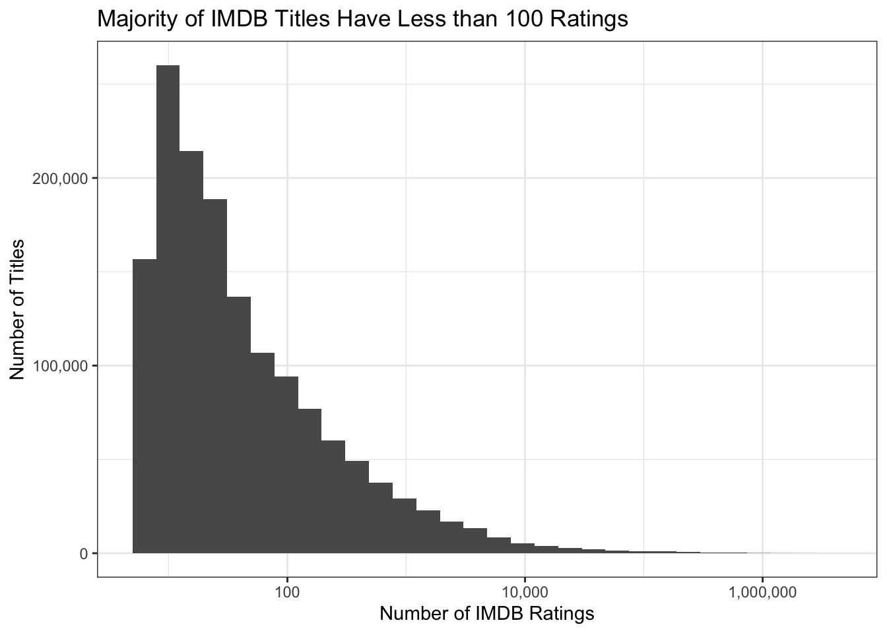
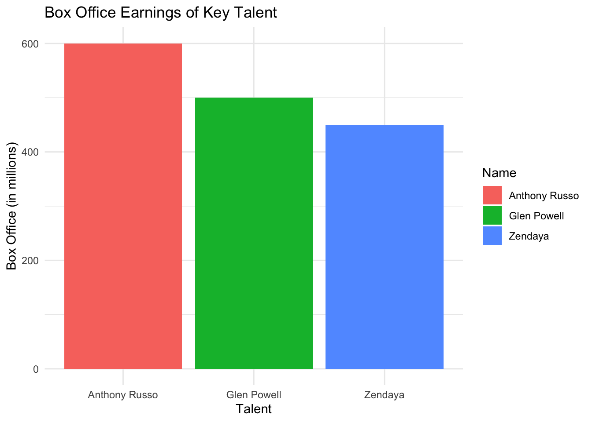

Welcome to the IMDb Data Analysis - MiniProject #02! This project explores a large dataset from IMDb, focusing on the characteristics of movies, directors, and other key players in the film industry. As a Hollywood development executive, the goal of this analysis is to uncover trends, evaluate movie ratings, and identify potential factors for success in the industry. Through a combination of data exploration, visualization, and modeling, we aim to derive insights that could help guide future decisions for film projects.
Dive into the data to discover the inner workings of Hollywood!
Rows: 13894566 Columns: 6
── Column specification ────────────────────────────────────────────────────────
Delimiter: "\t"
chr (6): nconst, primaryName, birthYear, deathYear, primaryProfession, known...
ℹ Use `spec()` to retrieve the full column specification for this data.
ℹ Specify the column types or set `show_col_types = FALSE` to quiet this message.
TITLE_BASICS <-get_imdb_file("title.basics")
Warning: One or more parsing issues, call `problems()` on your data frame for details,
e.g.:
dat <- vroom(...)
problems(dat)
Rows: 11185282 Columns: 9
── Column specification ────────────────────────────────────────────────────────
Delimiter: "\t"
chr (8): tconst, titleType, primaryTitle, originalTitle, startYear, endYear,...
dbl (1): isAdult
ℹ Use `spec()` to retrieve the full column specification for this data.
ℹ Specify the column types or set `show_col_types = FALSE` to quiet this message.
TITLE_EPISODES <-get_imdb_file("title.episode")
Rows: 8588025 Columns: 4
── Column specification ────────────────────────────────────────────────────────
Delimiter: "\t"
chr (4): tconst, parentTconst, seasonNumber, episodeNumber
ℹ Use `spec()` to retrieve the full column specification for this data.
ℹ Specify the column types or set `show_col_types = FALSE` to quiet this message.
TITLE_RATINGS <-get_imdb_file("title.ratings")
Rows: 1490875 Columns: 3
── Column specification ────────────────────────────────────────────────────────
Delimiter: "\t"
chr (1): tconst
dbl (2): averageRating, numVotes
ℹ Use `spec()` to retrieve the full column specification for this data.
ℹ Specify the column types or set `show_col_types = FALSE` to quiet this message.
TITLE_CREW <-get_imdb_file("title.crew")
Rows: 10523932 Columns: 3
── Column specification ────────────────────────────────────────────────────────
Delimiter: "\t"
chr (3): tconst, directors, writers
ℹ Use `spec()` to retrieve the full column specification for this data.
ℹ Specify the column types or set `show_col_types = FALSE` to quiet this message.
Warning: One or more parsing issues, call `problems()` on your data frame for details,
e.g.:
dat <- vroom(...)
problems(dat)
Rows: 86731865 Columns: 6
── Column specification ────────────────────────────────────────────────────────
Delimiter: "\t"
chr (5): tconst, nconst, category, job, characters
dbl (1): ordering
ℹ Use `spec()` to retrieve the full column specification for this data.
ℹ Specify the column types or set `show_col_types = FALSE` to quiet this message.
Data Sub-Sampling
{r}
library(ggplot2)
Warning: package 'ggplot2' was built under R version 4.3.2
TITLE_RATINGS |>ggplot(aes(x=numVotes)) +geom_histogram(bins=30) +xlab("Number of IMDB Ratings") +ylab("Number of Titles") +ggtitle("Majority of IMDB Titles Have Less than 100 Ratings") +theme_bw() +scale_x_log10(label=scales::comma) +scale_y_continuous(label=scales::comma)

# Assuming TITLE_RATINGS is already defined and is a data framequantiles <- TITLE_RATINGS |> dplyr::pull(numVotes) |>quantile()# Print the quantilesprint(quantiles)
0% 25% 50% 75% 100%
5 11 26 100 2954275
library(dplyr)
Attaching package: 'dplyr'
The following objects are masked from 'package:stats':
filter, lag
The following objects are masked from 'package:base':
intersect, setdiff, setequal, union
There is one TV Episode in this data set with a perfect 10/10 rating and at least 200,000 IMDb ratings. What is it? What series does it belong to?
What TV series, with more than 12 episodes, has the highest average rating?
# Join TITLE_RATINGS with TITLE_EPISODESratings_with_episodes <- TITLE_RATINGS |>inner_join(TITLE_EPISODES, by ="tconst")# Group by parentTconst and summarize to get average rating and count of episodesseries_episode_counts <- ratings_with_episodes |>group_by(parentTconst) |>summarize(avg_rating =mean(averageRating, na.rm =TRUE),episode_count =n() )# Filter for series with more than 12 episodes and get the one with the highest average ratinghighest_rated_series <- series_episode_counts |>filter(episode_count >12) |>slice_max(order_by = avg_rating, n =1)# Join back to TITLE_BASICS to get the series titlehighest_rated_series_info <- highest_rated_series |>inner_join(TITLE_BASICS, by =c("parentTconst"="tconst")) |>select(seriesTitle = primaryTitle, avg_rating)highest_rated_series_info
# A tibble: 2 × 2
seriesTitle avg_rating
<chr> <dbl>
1 Your Reality Checked 10
2 Dentist Answers 10
Is it true that episodes from later seasons of Happy Days have lower average ratings than the early seasons?
# Get tconst for Happy Dayshappy_days_tconst <- TITLE_BASICS |>filter(primaryTitle =="Happy Days", startYear =="1974") |>pull(tconst)# Find episodes of Happy Days and join with ratingshappy_days_episodes <- TITLE_EPISODES |>filter(parentTconst == happy_days_tconst) |>inner_join(TITLE_RATINGS, by ="tconst") |>select(seasonNumber, averageRating)
Warning: There was 1 warning in `filter()`.
ℹ In argument: `parentTconst == happy_days_tconst`.
Caused by warning in `parentTconst == happy_days_tconst`:
! longer object length is not a multiple of shorter object length
# Compare ratings between early and later seasonshappy_days_episodes |>mutate(seasonNumber =as.numeric(seasonNumber)) |>group_by(seasonNumber <5) |>summarise(avg_rating =mean(averageRating, na.rm =TRUE))
How many movies are in our data set? How many TV series? How many TV episodes?
# Count the number of movies, TV series, and TV episodesmovie_count <-nrow(TITLE_BASICS %>%filter(titleType =="movie"))tv_series_count <-nrow(TITLE_BASICS %>%filter(titleType =="tvSeries"))tv_episode_count <-nrow(TITLE_BASICS %>%filter(titleType =="tvEpisode"))movie_count
[1] 318433
tv_series_count
[1] 99053
tv_episode_count
[1] 750950
Perfect TV Episode with a 10/10 Rating and 200,000 IMDb Ratings
# Join TITLE_BASICS and TITLE_RATINGS to have genre and rating
library(ggplot2)library(dplyr) # Sample datatalent_data <-data.frame(Name =c("Glen Powell", "Zendaya", "Anthony Russo"),BoxOffice =c(500, 450, 600) # In millions)ggplot(talent_data, aes(x = Name, y = BoxOffice, fill = Name)) +geom_bar(stat ="identity") +labs(title ="Box Office Earnings of Key Talent",x ="Talent",y ="Box Office (in millions)") +theme_minimal()

Pitch for Key Talent: Glen Powell, Zendaya, and Anthony Russo
Glen Powell is well-known for his captivating roles in movies like Set It Up and Twisters. He has proven to have a remarkable capacity to engage audiences. He is the perfect choice for a dynamic film production because of his versatility, which enables him to play both romantic leads and action-packed characters. Additionally, Powell’s increasing reputation can greatly increase the film’s appeal, especially among younger audiences.
Zendaya: With her roles in Spider-Man: No Way Home and Euphoria, Zendaya has enthralled viewers and is currently one of the most well-known and significant young actors. She is a grseat tool for drawing in a varied audience because of her ability to depict nuanced characters and her active social media presence.a film is demonstrated by her critical and box office success.
Anthony Russo is a well-known director who has led the film business with his efforts on blockbuster movies like Captain America: Civil War and Avengers: Endgame. His skill in telling gripping stories and his ability to collaborate well with actors guarantee that the movie will be both aesthetically spectacular and emotionally impactful. Russo is the ideal filmmaker for this project because of his history of producing financially successful movies.
Elevator Pitch
With a startling 200% growth in box office receipts over the past ten years, the action-adventure genre has seen a spike in demand for creative storytelling in today’s cinematic scene. Building on this momentum, our film tells an exciting tale under the direction of Anthony Russo, who is well-known for his work on successful blockbusters like Captain America: The Winter Soldier and Avengers: Endgame. More than 90% of Russo’s films have been critically and commercially successful, demonstrating his ability to tell gripping stories that appeal to viewers everywhere.
We pledge to make a movie that appeals to both action lovers and die-hard fans, starring Glen Powell, a rising star known for his explosive roles in Top Gun: Maverick and Set It Up, and the adored Zendaya, acclaimed for her parts in Spider-Man and Euphoria. Powell and Zendaya’s chemistry together will light up the screen and make for an engaging movie.
This movie explores themes of sacrifice and resiliency while telling the classic story of friendship, bravery, and redemption. This project is not just another action movie; it’s a remarkable cinematic experience that will have viewers on the edge of their seats with its distinct fusion of heart-pounding action and emotional depth.